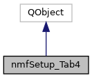

The class containing the interactions for the 4th Setup tabbed pane. More...
#include <nmfSetupTab04.h>
Inheritance diagram for nmfSetup_Tab4:

Collaboration diagram for nmfSetup_Tab4:

Public Slots | |
| void | callback_CovariatesSB (int value) |
| Callback invoked when user changes number of covariates widget. More... | |
| void | callback_LoadPB () |
| Callback invoked when user presses the Load button. | |
| void | callback_NextPB () |
| Callback invoked when user presses the Next Page button. | |
| void | callback_PrevPB () |
| Callback invoked when user presses the Previous Page button. | |
| void | callback_SavePB () |
| Signal emitted signifying a project has just been saved. | |
Public Member Functions | |
| nmfSetup_Tab4 (QTabWidget *tab, nmfLogger *logger, nmfDatabase *databasePtr, QTextEdit *setupOutputTE, std::string &projectDir) | |
| class constructor for nmfSetup_Tab4 More... | |
| QTableView * | getTableEnvCovariates () |
| Gets the environmental covariates table. More... | |
| bool | loadWidgets () |
| Populates the widgets in this class with initial data. More... | |
| void | setSpecies (QString species) |
| Sets this GUI's widget data to reflect the passed species. More... | |
Detailed Description
The class containing the interactions for the 4th Setup tabbed pane.
Constructor & Destructor Documentation
◆ nmfSetup_Tab4()
| nmfSetup_Tab4::nmfSetup_Tab4 | ( | QTabWidget * | tab, |
| nmfLogger * | logger, | ||
| nmfDatabase * | databasePtr, | ||
| QTextEdit * | setupOutputTE, | ||
| std::string & | projectDir | ||
| ) |
class constructor for nmfSetup_Tab4
- Parameters
-
tab : parent tab widget into which to place this widget as a child tabbed pane logger : pointer to logger class databasePtr : pointer to database class setupOutputTE : unused; kept in for possible future usage projectDir : the name of the project directory
Member Function Documentation
◆ callback_CovariatesSB
|
slot |
Callback invoked when user changes number of covariates widget.
- Parameters
-
value : number of covariates set by the user
◆ getTableEnvCovariates()
| QTableView * nmfSetup_Tab4::getTableEnvCovariates | ( | ) |
Gets the environmental covariates table.
- Returns
- Returns the Environmental Covariates QTableView widget
◆ loadWidgets()
| bool nmfSetup_Tab4::loadWidgets | ( | ) |
Populates the widgets in this class with initial data.
- Returns
- true if load was successful, else false
◆ setSpecies()
| void nmfSetup_Tab4::setSpecies | ( | QString | species | ) |
Sets this GUI's widget data to reflect the passed species.
- Parameters
-
species : species to set and whose data to load
The documentation for this class was generated from the following files:
- MSCAA_GuiSetup/nmfSetupTab04.h
- MSCAA_GuiSetup/nmfSetupTab04.cpp